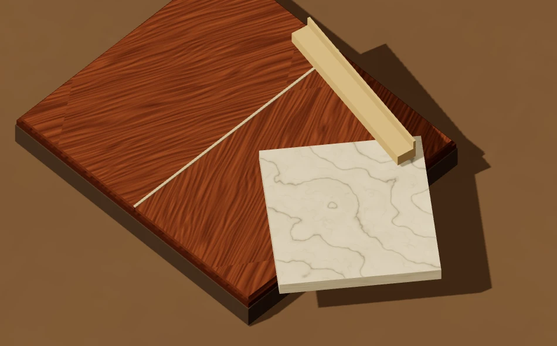
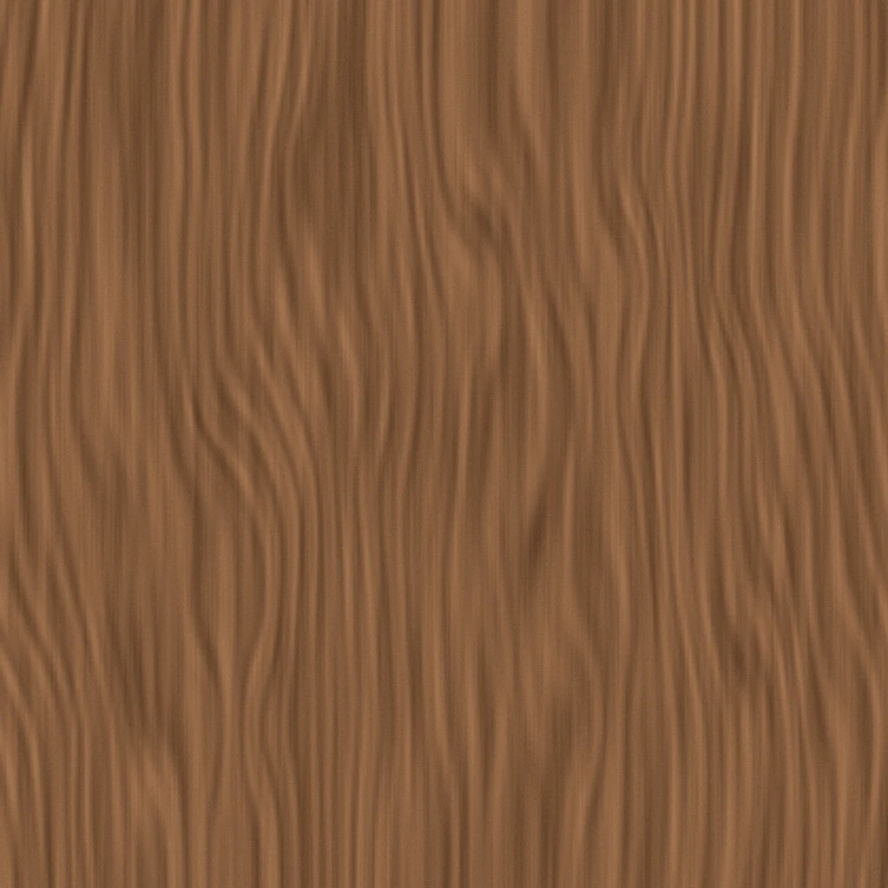
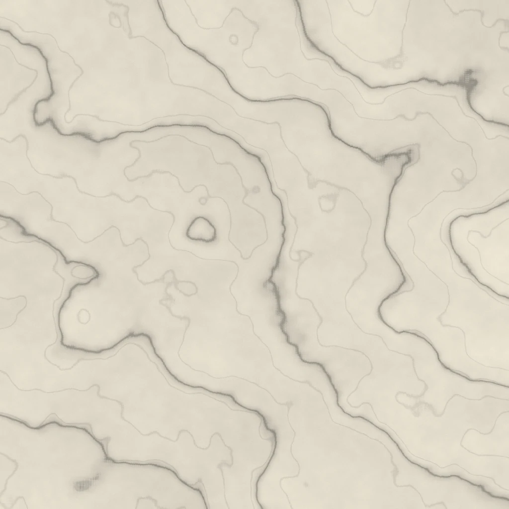

Материалы фабрики
Фактура и отделка
Сначала выберите конструкцию корпуса, затем фасады и рабочую поверхность. Состав конкретной коллекции приведён в её карточке.


Палитра Makassar

Текстура ореха Палитра Dama 01
Палитра Dama 01 Палитра Alea
Палитра Alea

Рисунок камняКорпус
- МДФ
- Плита из древесных волокон для деталей корпуса и последующей отделки.
- Массив
- Древесина с естественной структурой, которую можно обрабатывать и восстанавливать.
- ЛДСП
- Ламинированная древесно-стружечная плита для внутренних деталей.
Фасады
- МДФ с эмалью
- Цветное покрытие с матовой или глянцевой поверхностью.
- МДФ со шпоном
- Тонкий срез натурального дерева сохраняет рисунок волокон.
- Стекло
- Вставки для витрин и верхних шкафов.
- Массив
- Натуральная древесина для гладких и профилированных деталей.
- ЛДСП
- Ламинированный фасад. Для торцов важна защита от воды и нагрева.
Столешницы
- Мрамор и гранит
- Натуральные камни с различным рисунком. Уход подбирают под породу.
- Оникс
- Натуральный камень, поверхность которого поддаётся шлифовке.
- Кварц
- Композит с минеральным наполнителем.
- Акрил
- Искусственный камень с выбором цвета и текстуры.
- Дерево
- Среди вариантов — орех, дуб и ясень. Поверхность можно обновлять шлифовкой.
- Керамика
- Для рабочей поверхности используют материал, устойчивый к нагреву.
- Стекло
- Поверхность устойчива к износу, но контакт с посудой может быть слышен.